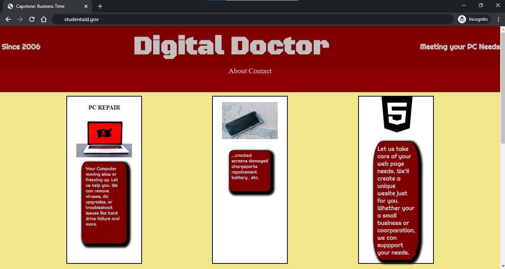

I started this course because I knew there was something greater in this world for me. I've always wanted to be a programmer, but I just didnt know what kind, until now. I aspire to be part of team, perhaps working for Google or Amazon or maybe even Facebook. Who knows, anything is possible.
Through out the course I plan to utilize the things I've learned like making and keeping up with a schedule. There is all types of information on the web that will help me grow my knowledge and keep me up to date with current languages and technologies. And most of all practice practice practice coding.
I really enjoyed the assignments but if I had to choose one It would be the Capstone Project. I guess I liked it most of all becuase it encapsulated everything I've learned so far. I was able to see all my hard work pay off. This project taught me that that there is no limit to the things I can create if I put my mind to it.
My biggest accomplishment in this course was not giving up. There were times when I wasn't sure if I would make it through. Each time I realized I could do this, and I did. I'm still working on grid sizing and flexbox, but I'm getting there. I know that I can do this and I've proven to myself that this is the path for me.

Many years ago, before this course, I was taking a computer repair course. Part of the course I had to create a web page, but it was nothing like this. This course was more indepth in every way. My understanding has grown, in that I understand the inner workings of HTML. I'm starting to understand what the life of developer is like, in some aspect.
With what I've learn and will learn, I can and will make a great programmer. This course will help me because, the skills required are what is needed in many industries. I will take with me the knowledge I've gained and the creativity I possess to make the best carreer.